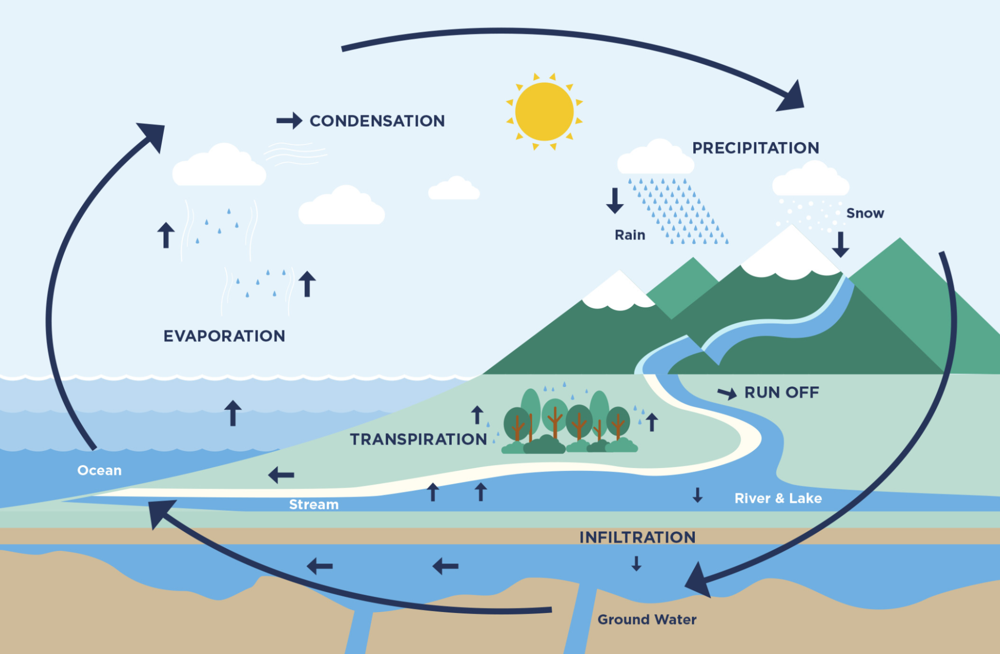
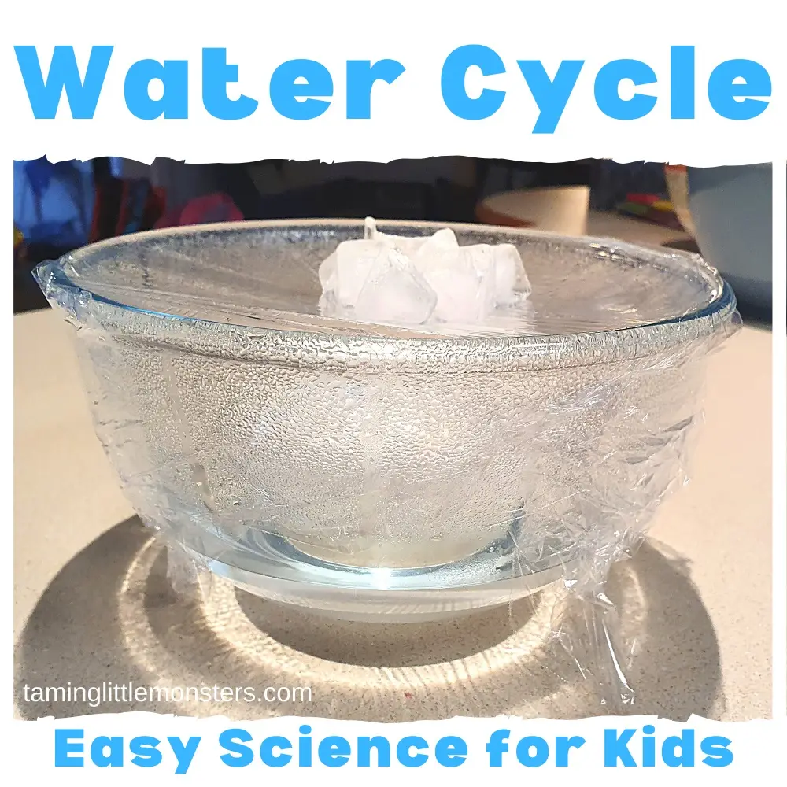
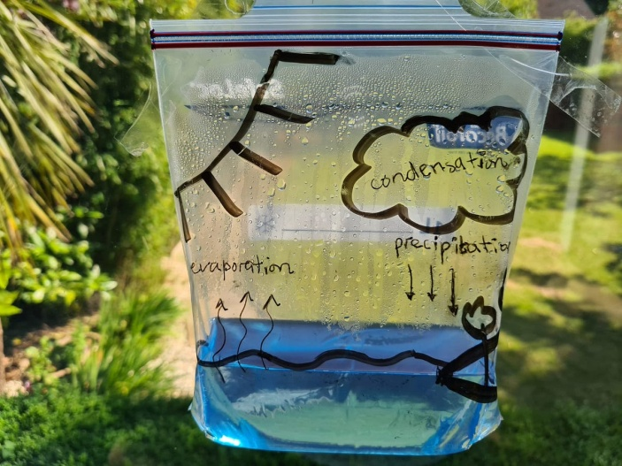
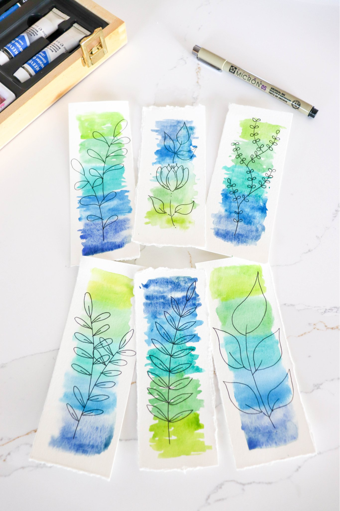

Set the tone for the walk and introduce the topic before beginning the walk. This should take between 5–10 minutes — nothing longer than the attention spans of the kids.
Opening Duaa
Start with a duaa for protection from harm and evil. The duaa can be led by either the walk leader or a child who has the duaa memorized.
“Are the disbelievers not aware that the heavens and the earth used to be joined together and that We ripped them apart, that We made every living thing from water? Will they not believe?”
Surah Al-Anbiya’ 21:30
In this ayah, Allah informs us that He originated all living things from a single source: water. He has made it such that all life requires its origin to be sustained. Water has long been a sign of life and hope. In order to distribute water amongst creation, Allah has put in place elaborate mechanisms. He has also created water in such a way that it can exist in different states to serve different purposes. To kick off our 8-week exploration of water, we will be learning about where water comes from, its different states, the water cycle, and how this abundant compound forms the foundation of all life.
This is information to share with the kids. What you share and the level of detail will depend on the ages of the kids in your pod. Use your discretion.
What do you know about water?
Water particles stay close to each other, but not too close — they can flow. Water takes the shape of its container. Water flows down and sideways. There is water all over the world.
Water exists in three states: liquid (rain, rivers, oceans), solid (ice and snow), and gas (water vapour in clouds and steam). Allah made water the only substance that naturally moves between all three states under normal conditions on Earth.
What is the Water Cycle?
The water cycle is Allah’s system for circulating water through creation: the sun’s heat causes water to evaporate from oceans and lakes, rising vapour cools and condenses into clouds, then falls as precipitation (rain or snow), collects in rivers, lakes, and underground, and begins again.

The Water Cycle: evaporation, condensation, precipitation, run-off, and infiltration
About 71% of Earth’s surface is covered in water — but most is saltwater in the oceans. Only about 3% is freshwater, and most of that is frozen in glaciers. Less than 1% of all the water on Earth is freshwater accessible for drinking!
Where does our water here in DFW come from?
Here in North Texas, our water comes from local lakes and reservoirs — Lake Lavon, Lake Eagle Mountain, Lake Lewisville, Lake Grapevine, and Lake Ray Hubbard all help supply the region. These fill from rainfall and rivers flowing through the area.
Do the lakes and reservoirs always have the same amount of water?
Spring is the start of the rainy season in DFW. We experience frequent thunderstorms during this time, with May being the wettest month. Heavy rainfall can lead to flash flooding, but spring rainfall also replenishes lakes, rivers, and groundwater, improving water levels.
How ancient is our water?
The same water Allah created has been cycling through the Earth for billions of years! The water we drink today may have once flowed in a river in ancient Arabia, fallen as snow on a distant mountain, or even been a dinosaur’s drinking water millions of years ago! Allah entrusted that same water to us and we should conserve and protect this precious resource.
Part 2
Walking with Intention
Now that we are all up to speed on this week’s topic, let’s start walking! The following are some conversations and activities to do as you walk. This should take about 30–60 minutes.
The Most Beautiful of Names
Introduce the name of Allah and its basic meaning as you start your walk. Encourage the kids to reflect on the name throughout the walk, and mention it whenever relevant.
الغَنِيّ
Al-Ghanyy
The One Who is Free of All Need
Allah has made all life reliant on water: where there is water, there is life, and its absence is a death sentence. There is not a living being that can survive without water. When searching for the possibility of life on other planets, scientists look for signs of water, for water is known to be a precursor for life. Every human is equally reliant on water to sustain their life, no matter how rich and powerful they may be. Reflecting on our heavy reliance on water highlights an important difference between the Creator and His creation: He relies on nothing, He is completely free of all need, He is Al-Ghanyy. Even those who reject Allah and do not acknowledge their need for Him cannot deny their need for His creation. We are entirely reliant on Him, but He has no need for us, yet He showers us with endless mercy.
Here are some observation prompts to help the kids tune into their environment and engage all of their senses.
Ages 1–4
Is there anything you see wet right now? Where is the water coming from?
How do you feel when you see rain after a long dry time?
Ages 5–8
Look around you — where do you see signs of water right now? (Dew on grass, moisture in soil, puddles, clouds overhead.)
What happens if you leave water in the sun vs. shade?
Ages 9–14
Where does the water in your home come from before it reaches your tap?
Why do you think water is described as a “mercy” in many traditions?
What connections do you see between sunlight and water movement?
Part 3
Grounding in Gratitude
Phew, that was a good walk! Let’s pause and apply what we have learned and reflect on what we have observed.
Stories for Blooming Hearts
Share a story from our tradition that ties to this week’s topic. Note that creating an engaging storytelling experience is on the storyteller; these are just the basic details. A story told from the heart will reach hearts!
Prophet Musa (AS) as a Baby in the River Nile
After Fir’awn and his army were drowned in the sea, Musa (AS) led Bani Isra’il out of Egypt and into the desert. Now they were free, but being in the middle of the desert meant they needed water and provision.
Bani Isra’il complained to Musa (AS) that there was no water, so Musa (AS) made du’a asking Allah to send them water.
Usually when people pray for water, Allah would send water through rain from clouds. This time was different though. Similar to the water of Zamzam, Allah created a new water source for them that didn’t exist before!
Allah commanded Musa (AS) to strike a particular rock with his staff. Musa (AS) hit the rock with his large stick and a miracle occurred! Twelve springs of water burst forth from the rock.
There were twelve tribes of Bani Isra’il, so Allah made it so that each tribe had its own water source, and not one tribe was left out.
Take-aways
Today we learned about the process of how we get water — from clouds, rivers, etc. However, Allah SWT rules the world and all of its creation. He is not bound by the rules of nature that He makes and can change them at any time, causing miracles like the one in this story.
This story teaches us that Allah will provide for everyone. He made sure each tribe had its own water source and not one tribe was left out.
Allah ended this story in Surat Baqarah by telling us to eat and drink but do not spread corruption. This is a reminder to be grateful for the blessings we have and to take care of them. After being freed and then sent food and water, Bani Isra’il should have been the most grateful people but they still constantly found things to complain about. Allah is teaching us not to follow their mistakes — every blessing should bring us closer to Allah.
Reference: Tafsir of Surat Al-Baqarah Ayah 60 and Surat Al-A’raf Ayah 160
Pass around the ice cube — solid! Feel how cold it is. Watch it start to melt in your hand — it’s turning into liquid.
Pour a little water from the bottle onto the leaf — liquid! Watch how it moves.
Hold the dark paper or mirror near the mouth of the thermos — steam will condense and leave droplets. “The gas became liquid again — just like clouds making rain!”
Ask: which state do we drink? Which falls from the sky? Which forms when water freezes?
Ages 5–8: Mini Water Cycle & Desalination

Materials to bring from home
1 large bowl
1 small bowl or cup (short enough to sit inside the large bowl)
Cling wrap
A couple of ice cubes
Salt
Hot water (boiled ahead of time, cooled 2–3 minutes before pouring — adults handle this)
Optional: a few drops of blue food colouring
Spoons for tasting, one per child
Activity
Place the small bowl in the centre of the large bowl.
Pour the hot salted water into the large bowl around the small bowl (not into it). Add food colouring if using.
Stretch cling wrap tightly over the top of the large bowl and seal the edges.
Place ice cubes on the centre of the wrap, directly above the small bowl — this creates a dome that dips down toward the collection cup.
Wait 20–30 minutes in a sunny spot and check: water droplets should form on the underside of the wrap and drip into the small bowl.
Taste a drop from the large bowl (salty), then a drop from the small bowl (fresh!).
Reference: Link. For free printable water cycle, scroll to bottom of this page and click on link to printable.
Discussion Questions
What do you think happened to the salt — where did it go?
Salt can’t evaporate. When water heats up, water molecules escape into the air as vapour, but salt molecules are too heavy and too strongly bonded to do the same — they stay behind in the bowl.
Which part of our experiment was like the sun? Which part was like clouds?
The hot water acts like the sun — it provides heat that drives evaporation. The ice cube acts like the upper atmosphere — cold air high in the sky that causes vapour to cool and condense into droplets.
If almost all the water on Earth is salty, and rain is always fresh — who figured out how to do that?
The heat causes the salty water to evaporate. The vapour rises, hits the cold wrap, and condenses into droplets — just like clouds forming. Then it “rains” down into the cup. But the salt stays behind. Allah built this same purification process into the sky: every drop of rain that falls on Earth started as saltwater evaporated from the ocean.
Ages 9–14: Mini Water Cycle & Desalination (Advanced)
Same materials and steps as the Ages 5–8 activity above.
Discussion Questions
Why does salt stay behind when water evaporates — what’s actually happening at the molecular level?
Water (H₂O) molecules are small and have enough kinetic energy when heated to break free from the liquid surface and enter the air as vapour. Salt (sodium chloride) dissociates into ions (Na⁺ and Cl⁻) that are held in solution by strong ionic bonds with water molecules — they don’t have the energy to escape into vapour form at these temperatures. Evaporation is essentially a molecular filter.
Less than 1% of Earth’s water is fresh and accessible. Allah designed a planetary desalination system that runs continuously without any energy cost to us. What does that make you feel?
Reflect freely — this is a moment for gratitude and wonder.
Allah describes sending down “مَاءً طَهُورًا” — purifying water — in Surah Al-Furqan. Having done this experiment, what do you understand about that description now that you didn’t before?
Rain is inherently purified through the natural desalination of evaporation — Allah designed rain itself to be a cleansing force.
What are the limits of this system — what could break it, and what role do we play in protecting it?
Pollution, climate change, and overuse of groundwater can disrupt the cycle. Our role as Khulafa (stewards) of the Earth means actively protecting these systems.
After completing the activity is a good time to stop for a snack. Power their brains and bodies with something nutritious! Bonus points for avoiding single-use plastics and being good Khulafa. Be sure to leave the area as you found it, or better — following the good manners taught to us by our Prophet ﷺ.
Need more nature? We got you! Here are some additional resources to further enrich your understanding and reflection. These can be utilised by the pod, by individual families, or a combination of both — whatever best fits your needs!
Prophetic Wisdom
Find an opportunity to share the wisdom of our Prophet ﷺ as you walk.
“Whoever gives a Muslim water to drink when water is available, it is as if he freed a slave; and whoever gives a Muslim water to drink when there is no water available, it is as if he brought him back to life.”
Sunan Ibn Majah 2474
This beautiful hadith motivates us to be of those who rush to serve others water! May Allah make us of those who give people clean drinking water in this dunya and of those who drink the water of Jannah.
“Do you not see that Allah drives the clouds, then gathers them together and piles them up until you see rain pour from their midst? He sends hail down from such mountains in the sky, pouring it on whoever He wishes and diverting it from whoever He wishes — the flash of its lightning almost snatches sight away.”
There is a mention of all three states of water in this ayah — can you spot them?
“Knowledge of the Hour, when He will send down relieving rain, and what is hidden in the womb all belong to Allah alone. No soul knows what it will reap tomorrow, and no soul knows in what land it will die; it is Allah who is all knowing and all aware.”
The timing of Judgement Day, when it will rain, and what is hidden in the wombs are all pieces of knowledge unknown to us. With all the advancements in technology, we still cannot know with full certainty when it will rain — how many times has the weather forecast been completely off? Allah has taught us some signs of Judgement Day, but it is still unknown to all but Him.
A flow of movements to get kids’ energy out at the beginning, or help them calm down at the end of the walk. One breath = one inhale and one exhale that is twice as long as the inhale.
1
Begin by imagining you are a molecule of water in a liquid state, bring your arms by your side and wave them side to side, that’s how loose molecules would move around this state. Now by warming under the sun, slowly raise your arms straight up into the sky and stand in warrior 1 pose: left foot in front and right foot one step behind, inhale with your arms up and exhale, roll your shoulders down your back. Switch feet and repeat a breath each.
2
Now swoop your arms down and then raise them up to the clouds, imagine being water molecules turning into a gas state, further apart and more loose! Spread your arms wider apart into a T shape, right arm back and left arm at the front, left leg in the front and right foot in a line behind (Warrior 2 pose). Take an inhale and bend into the front left leg, exhale and straighten the left leg. Take the left arm up to the sky and the right arm rests on the back leg. Reverse warrior, take a breath. Switch sides and repeat for a breath.
3
Now the gas molecules condense in the cloud. Bring arms together and come down in a forward hinge at the hip, pouring rain down with your fingertips. With a deep inhale, lift your head up, straight back into a halfway fold (Rukoo pose) and exhale, and hinge forward back down. Now bend legs into a slow squat position, palms together. Imagine the water molecules tightening closer and closer together into solid ice. Squat and sink low in; inhale and slow exhale. Gradually melt down onto the ground and take a few moments to make Zikr of gratitude.
**one breath = one inhale and one exhale that is twice as long as the inhale.
Here are more activities to try, whether as a group with your pod or individually at home.
Ages 5–8: Water Cycle in a Bag

Materials to bring from home
A large Ziploc bag
Permanent marker
A few drops of blue food colouring
¼ cup of water
Clear tape
Activity
Draw a simple water cycle on the outside of the bag with the marker: sun, clouds, rain, ground.
Pour water into the bag, add a drop of blue colouring, and seal it.
Tape it to a sunny window or hold it in direct sunlight.
Watch over 15–20 minutes: droplets will form near the top (condensation), then slide back down (precipitation).
The sun drives the water up; gravity brings it back down. This is the exact cycle described in the Qur’an over 1,400 years ago.
Additional Experiments to Explore
Volume change: ice vs water — Mark the level of water in a jar and then freeze it. Which takes up more room? Discuss how the unique hexagonal arrangement of molecules in ice keeps them farther apart than in liquid water, making ice float.
Salt and water – melting point experiment — Experiment with salt’s effect on the melting point of ice. What impact might salt molecules have on the arrangement of water molecules within ice? Discuss why people may put salt on sidewalks and roads in the winter.
Water sticks together – Experiment — Water molecules are attracted to each other (cohesion) and to surfaces (adhesion). When the string is wet, water clings to it and pulls the stream along rather than letting it fall straight down. The same force that lets water climb through plant roots against gravity — Allah built the tendency to cling and connect right into the molecule itself.
Let your heart guide you to create a beautiful work of nature art. Use Allah’s divine creations as inspiration!
Wet-on-Wet Watercolour Bookmarks

Learn how water is used to create beautiful art.
Materials to bring from home
Watercolour paints
Watercolour paper (or thick cardstock)
Cup of water
Brushes (one large, one small)
Permanent marker
Activity
Cut strips of watercolour paper in bookmark sizes.
Wet the entire paper with plain water using the large brush.
Drop colours onto the wet surface and watch them bloom and blend on their own — this mimics how water moves through different environments.
Notice: more water in the brush = lighter, more flowing colour. Less water = deeper, more concentrated. Even in art, water teaches us about states and movement.
Use the permanent marker to sketch leafy, floral designs onto each bookmark.
A Muslim polymath most often credited with an early scientific explanation of the water cycle. He wrote about it in his Kitab Al-Shifa’ (The Book of Healing), where he rejected the idea that water simply comes from underground oceans. He explained that rainwater seeps into the ground, forming springs, which then collect in larger bodies of water.
Al-Karaji (c. 953–1029)
Also described important parts of the water cycle, especially groundwater and how it moves through the Earth, in his work Inbāt al-Miyāh al-Khafiyya (Extraction of Hidden Waters).